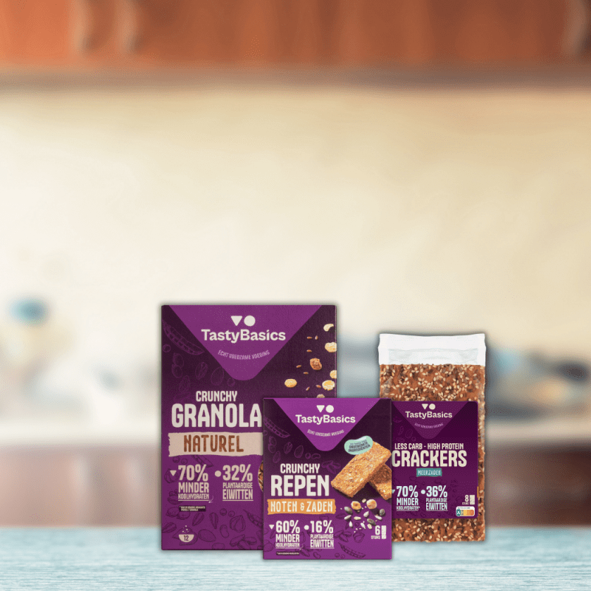
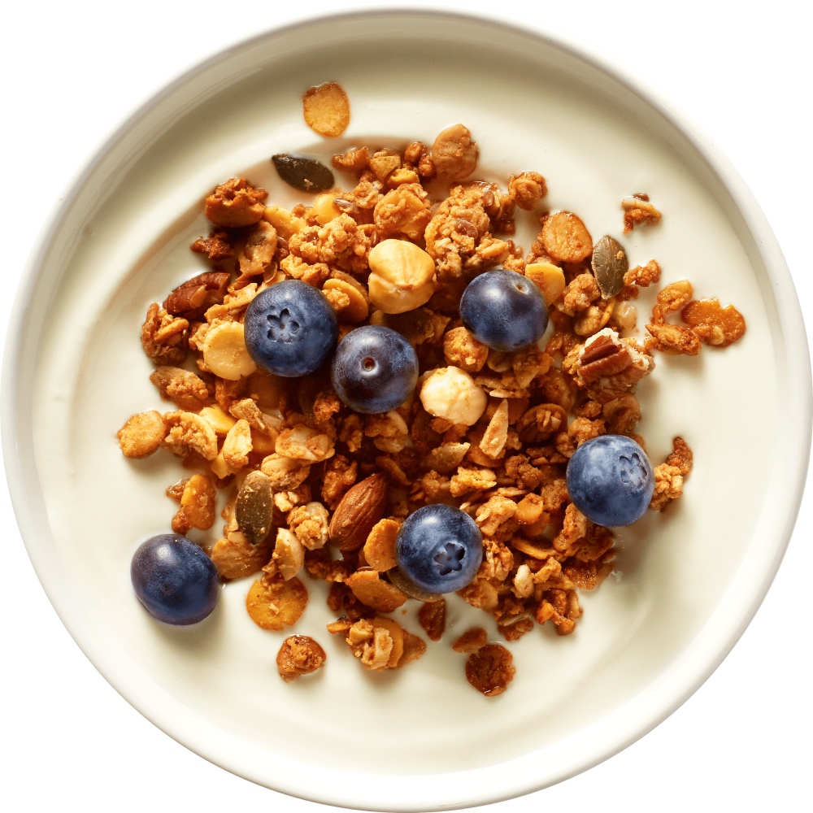
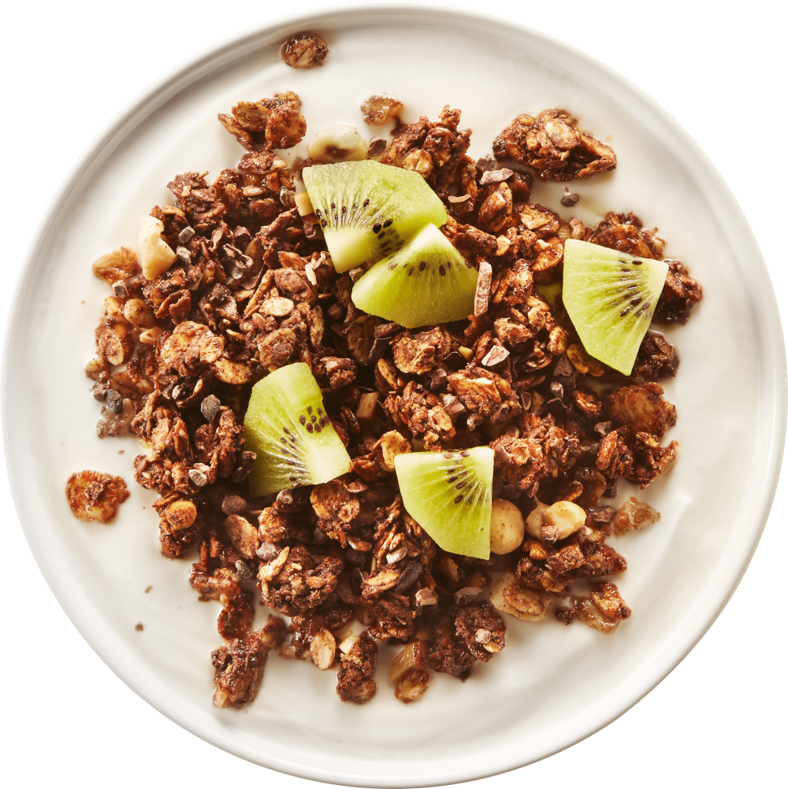

food must
nourish again

Unprocessed food should be the
most logical choice for everyone.,
That is really nutritious and very
tasty.

That is why we use as many unprocessed
ingredients as possible, suchas 'whole'
nuts, seeds, kernels, legumes, vegetables
and fruit.